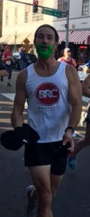
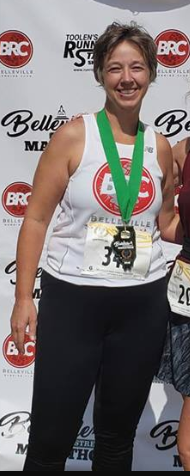
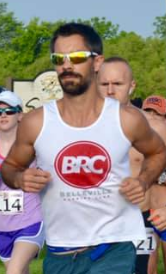
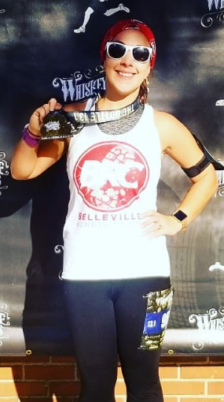
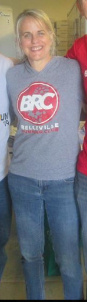
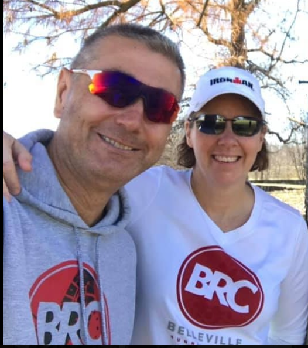
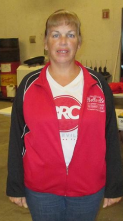
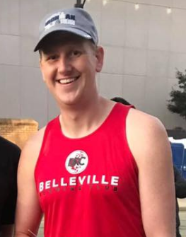

The Belleville Running Club greatly appreciates all of our current and past members, committees, and Board of Directors. Please contact the committee chair below if you are interested in helping out with any of the committees.
Current membership list (as of 2/21/19): BRC Membership-20190221
2019 Board of Directors
- Dan Trapp — President
- Jenny Gudmestad — Vice President
- Monica Taylor — Secretary
- Toby Trapp — Treasurer
- Kristi Pashia – Group Run Committee Chair
- Sarah West – Membership Committee Chair
- Costel and Lisa Zamfir – PR Committee Chair Co-Chairs
- Chalice Sandheinrich and Penny Horcher – Special Events
- Evan Gudmestad – Training Run Committee Chair
2018 Board of Directors
- Dan Trapp — President
- Jenny Hawley — Vice President
- Monica Taylor — Secretary
- Toby Trapp — Treasurer
- Kristi Pashia – Group Run Committee Chair
- Sarah West – Membership Committee Chair
- Costel and Lisa Zamfir – PR Committee Chair Co-Chairs
- Chalice Sandheinrich and Penny Horcher – Special Events Committee Co-Chairs
- Evan Gudmestad – Training Run Committee Chair
2017 Board of Directors
- Dan Trapp — President
- JT Turner — Vice President
- Erin Strausbaugh — Secretary
- Toby Trapp — Treasurer
- Kristi Pashia – Group Run Committee Chair
- Sarah West – Membership Committee Chair
- Tori Coleman and Erika Hart – PR Committee Chair Co-Chairs
- Costel and Lisa Zamfir – Special Events Committee Co-Chairs
- Evan Gudmestad – Training Run Committee Chair
2016 Board of Directors
- Toby Trapp — President
- JT Turner — Vice President
- Erin Strausbaugh — Secretary
- Dan Trapp — Treasurer
- Kristi Pashia – Group Run Committee Chair
- Andria Powell and Kris Kotoucek – Membership Committee Chair
- Sarah West – PR Committee Chair
- Costel and Lisa Zamfir – Special Events Committee Co-Chairs
- Evan Gudmestad – Training Run Committee Chair
2015 Board of Directors
- Toby Trapp — President
- Dan Trapp — Vice President
- Erin Strausbaugh — Secretary
- Patrick Hasenstab — Treasurer
- JT Turner (Group Run Committee Chair)
- Andria Powell and Kris Kotoucek (Membership Committee Chair)
- Sarah West (PR Committee Chair)
- Costel and Lisa Zamfir (Special Events Committee Co-Chairs)
- Meghan Zahn (Training Run Committee Chair)
2013/2014 Board of Directors
 Toby Trapp — President
Toby Trapp — President Dan Trapp — Vice President
Dan Trapp — Vice President Doug Havlin — Secretary
Doug Havlin — Secretary Patrick Hasenstab — Treasurer
Patrick Hasenstab — Treasurer


 Andria Powell (Membership Committee Chair)
Andria Powell (Membership Committee Chair) Meghan Zahn (Group Run Committee Chair)
Meghan Zahn (Group Run Committee Chair) Sarah West (PR Committee Chair)
Sarah West (PR Committee Chair)


2012 Board of Directors
Molly Hepp, Doug Havlin, Toby Trapp, Dan Trapp